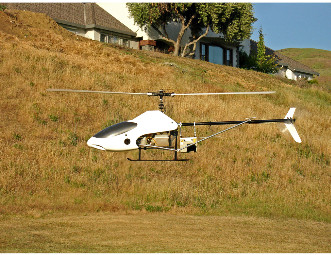

Fast Booting Solaris
By Jim Connors 23 July 2008
A veteran Java ONE keynote presenter, Perrone Robotics has
developed some real interesting technologies which take the
concept of using autonomous (i.e. unmanned) vehicles to a whole
new level. One of their key ingredients is the MAX software
platform which utilizes common commercially available components
to enable Perrone to very quickly and cost-effectively retrofit
nearly any vehicle in short order.

The MAX robotics platform runs on a (roughly 4" x 6") low-power PC board atop Solaris and Sun's Java Real-Time System (Java RTS). This combination gives Perrone the ability to leverage the huge Java development community, and assures that their critical software components behave in a predictable and deterministic fashion.
During the Java ONE 2007 conference, I was speaking with Paul Perrone about the notion of creating a minimized version of Solaris over which his platform might run. The helicopter pictured above, boots from a relatively small (4-8Gb) IDE flash drive, where standard Solaris takes up a substantial chunk. It leaves them precious little space to collect valuable information like telemetry or terrain data. Paul asked to revist this idea for a future project. That's where we left off.
Not that we've ignored them since, but it wasn't until a year later that small Solaris reared its head again. In addition to saving space, their main interest in this environment was in seeing how much faster Solaris might boot up. The ability to be fully functional from power-up in as short a time as possible is of critical importance.
So before investigating what advantages there might be, let's
provide some background information:
Hardware
Two separate systems were used, and for argument's sake, represent two ends of the x86 compute spectrum.
Embedded Profile
Modern Profile System iGologic i84810
Panasonic Toughbook CF-30 (Rev. F)
CPU 1GHz Celeron M
Core 2 Duo L7500 1.60GHz
RAM 512MB 1GB Disk 4GB Flash IDE Drive
Solid State SATA Drive
Operating Systems
Minimal configurations were created for Solaris 10 08/07 (Update
4) and OpenSolaris Nevada build 93. These configurations
boot entirely into RAM and consume less than 100MB ramdisk
space. With a little more effort they can be may
significantly smaller. The original blog post describing the
environment is here.
You can download the framework for these hardware/OS combinations
here,
and can get a feel for the build environment by taking a look at
this README.
Definitions
Within the context of this discussion, here are the key terms
along with their meanings.
Total Boot Time: This is the time it takes from power-up till a user is prompted to log in. Typically for a full Solaris installation, the windowing system must first start up and present the user with a login screen. In a minimal Solaris environment, there is no windowing system. Instead, the total boot time is defined as the time it takes from power-up till a user is prompted with the console login: prompt.
POST Time: POST or Power On Self Test is the time taken by the system at pre-boot to handle things like diagnostics, BIOS and device initialization. For this discussion, we'll define POST time as the time it takes from power-up until the user is presented with a GRUB boot menu. We call out this segment of the total time because in many cases we are at the mercy of the PC/BIOS manufacturer and can't overly influence how quickly or slowly this proceeds.
Solaris Boot Time: The time it takes from being presented with a GRUB boot menu till a Solaris user is prompted to log in. Again, depending upon whether a windowing system is configured or not, this may represent the time it takes to be prompted with a login screen or console login: prompt respectively. This represents the segment of time that we can influence.
We can conclude from these definitions that:
Total Boot Time = POST Time + Solaris Boot Time
Results
Embedded Profile: iGoLogic i84810 system
OS
Post Time
Solaris Boot Time
Total Boot Time
Solaris 10 08/07
13 sec
26 sec
39 sec
OpenSolaris Nevada Build 93
13 sec
18 sec
31 sec
Modern Profile: Panasonic Toughbook CF-30
OS POST Time
Solaris Boot Time
Total Boot Time
Solaris 10 08/07
6 sec
18 sec
24 sec
OpenSolaris Nevada Build 93
6 sec
9 sec
15 sec
Conclusions/Notes
1. These times were taken by hand with the stopwatch feature on
my Timex. If anything, the times might be slightly shorter
than actually recorded as there is a human delay in reacting to
seeing the necessary prompts. I ran the tests several times,
and the same numbers consistently appear.
2. The version of the OS appears to matter a lot, as OpenSolaris nvx_93 boots up nearly twice as fast as Solaris 10 U4 on the same hardware.
3. The type of I/O device subsystem seems to be a big factor too. For example, by switching out the IDE Flash Drive with a 5400 RPM IDE hard disk, i84810 total boot time decreased by about 6 seconds for both Solaris 10 and OpenSolaris.
4. The minimal Solaris environment is currently only available in
32-bit mode.
5. With relative ease, Solaris can be configured to boot in less
that 10 seconds on modern x86 hardware. My unofficial record
stands at 9 seconds (or slightly less). No doubt it
could boot faster on more robust hardware (eliminating POST
time). Any takers?